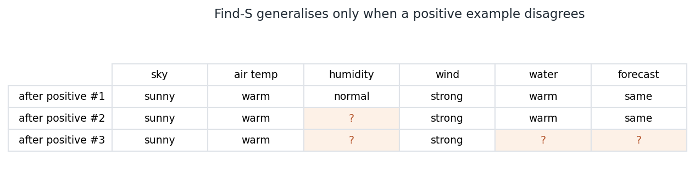
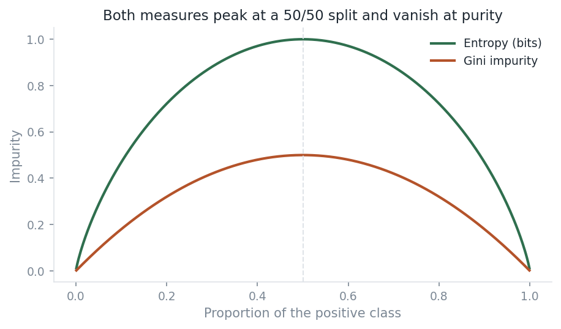
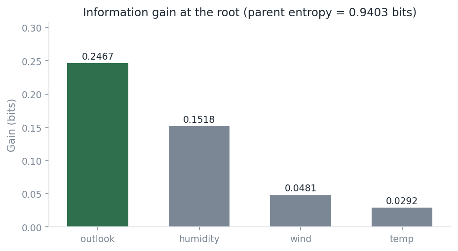
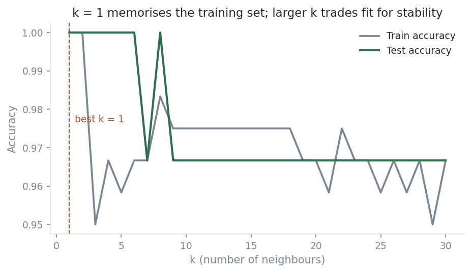
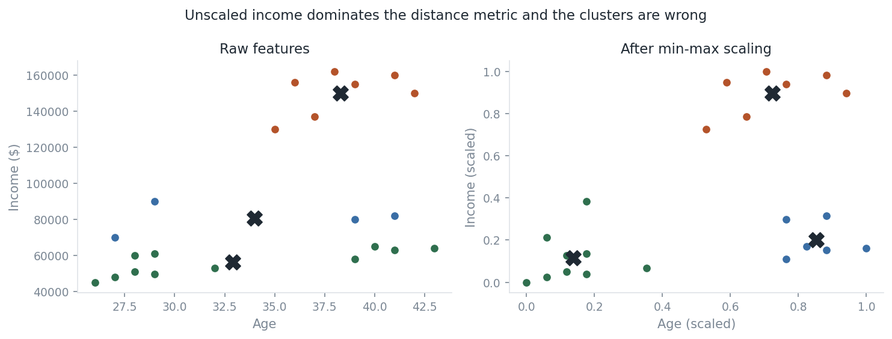
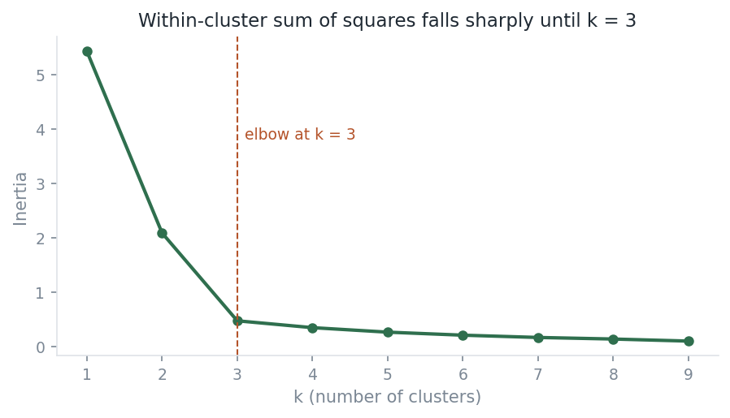

Portfolio · Project 00
Five foundational algorithms implemented in NumPy from their published descriptions. The point is not that they work — it is that an automated test-suite proves they agree with the library implementations they imitate.
This folder started as coursework — a mix of algorithms I worked through
myself and tutorials I followed while learning. The original notebooks are
preserved unchanged in substance under notebooks/, because
deleting them would hide where this actually began.
But a notebook that calls KNeighborsClassifier demonstrates that
I can read documentation. It does not demonstrate that I know what the
estimator does. So each algorithm was rewritten in src/ from its
published description, and a test-suite asserts the result matches
scikit‑learn's.
Anywhere the implementation and scikit‑learn disagree, either the implementation is wrong or the disagreement has a documented reason. Section 5 covers the one case where the reason is real.
Every row below corresponds to a test. None of it is asserted on trust.
| Implementation | Checked against | Result |
|---|---|---|
entropy, gini | Tree root impurity | Exact match |
information_gain | Mitchell's published gains | 4 decimal places |
best_split | Tree root feature | Same feature |
KNearestNeighbours | KNeighborsClassifier | Identical predictions |
CategoricalNaiveBayes | CategoricalNB | Posteriors to 5.6e−16 |
FindS | Mitchell's worked example | Exact hypothesis |
outlook
Find-S searches for the most specific hypothesis consistent with the positive
examples. It starts maximally specific and relaxes a constraint to
? whenever a new positive example disagrees.

?. Constraints only ever
loosen — the algorithm can never tighten one back up.
Find-S earns its place by being instructively wrong in three ways:
test_negative_examples_are_ignored adds a negative example and
asserts the learned hypothesis is byte-identical.?, discarding
the fact that only two specific values were ever observed.Version spaces, decision trees, and ensembles are each in some sense a response to one of those three failures.
Three functions make up the entire arithmetic core of ID3 and CART. They are
worth writing out because they demystify what
criterion="entropy" actually computes.


outlook wins with 0.2467 bits; temp is
nearly useless at 0.0292. These are the published textbook values, and
reproducing them exactly is what distinguishes a correct implementation
from a merely plausible one.
PlayTennis ships with a day column, D1–D14.
It looks like data. Left in, a decision tree splits on it, achieves perfect
training accuracy by memorising row identifiers, and generalises to nothing.
The loader drops it. This is the smallest honest demonstration of leakage I
know of.
KNN has no training step — fit only stores the data. All the cost
is deferred to prediction time, which is exactly why it is trivial to train
and expensive to serve.

Iris measurements are recorded to one decimal place, so exact distance ties are common: under Manhattan distance, 17 of 30 test queries have the k-th and (k+1)-th neighbour equidistant. When that happens the neighbour set is genuinely ambiguous, and two correct implementations may return different predictions.
On one such query this implementation predicts class 1 and scikit‑learn predicts class 2. Both are defensible. Rather than tune a tie-break rule until the numbers matched, the test-suite compares only unambiguous queries and asserts separately that the distance profiles always agree exactly. Forcing agreement would have hidden a real property of the algorithm.
The conditional-independence assumption is plainly false on PlayTennis — humidity and outlook are related — and the classifier works anyway. Two implementation details carry the whole thing.
Without it, a single unseen (feature, value, class) combination
drives the entire product to zero, and that class can never be predicted no
matter how strong the remaining evidence. The test pins both behaviours:
with smoothing the probability is small, without it exactly zero.
Multiplying many small probabilities underflows to zero in float64. The implementation sums logs instead, and normalises with the log-sum-exp trick.
def test_log_space_avoids_underflow_on_wide_input(self):
"""400 features would underflow to zero if probabilities were multiplied."""
n_features = 400
X = [["a"] * n_features, ["b"] * n_features] * 5
y = ["yes", "no"] * 5
model = CategoricalNaiveBayes().fit(X, y)
probabilities = model.predict_proba([["a"] * n_features])
assert np.isfinite(probabilities.to_numpy()).all()
assert probabilities.to_numpy().sum() == pytest.approx(1.0)
With both details right, the posteriors match
sklearn.naive_bayes.CategoricalNB to 5.6e−16 —
floating-point identical, not merely close.
k-means is not reimplemented here — Lloyd's algorithm adds little beyond what is already demonstrated — but one point from the notebook is worth keeping.


Every distance-based method in this folder inherits this sensitivity — including the KNN implementation above.
cd 00-foundations
python -m venv .venv
source .venv/bin/activate # Windows: .venv\Scripts\activate
pip install -r requirements.txt
pytest # 72 tests, ~2 seconds
python scripts/make_figures.py # regenerate every figure aboveUsing the implementations directly:
from src.datasets import load_play_tennis
from src.impurity import best_split, entropy
X, y = load_play_tennis()
print(entropy(y)) # 0.9402859586706311
print(best_split(X, y)) # ('outlook', 0.24674981977443933)impurity.py
supplies the split criterion; recursive induction is left to the library.src/ is written from
scratch, which is what the tests exist to substantiate.